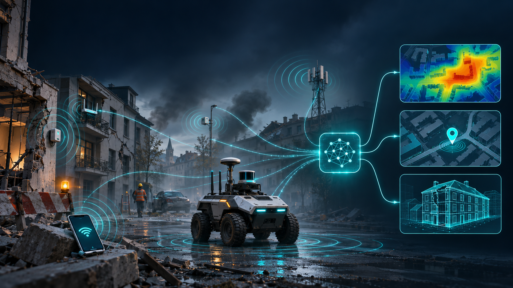

Wireless and radar perception
Developing methods for radio mapping, positioning, line-of-sight detection, asset tracking, and environment reconstruction.
OASIS is developing openly documented AI solutions that use ambient wireless signals to support perception when conventional sensors or infrastructure are unavailable, unreliable, or disrupted.

OASIS explores how wireless signals already present in the environment can provide information about devices and surroundings. The project will develop and validate reusable methods for interpreting those signals, supporting situational awareness when conventional sensing or infrastructure is limited or disrupted.
The project brings together partners across three countries: Italy, Armenia, and Greece. Their work spans wireless and radar sensing, artificial intelligence, robotics, and interoperability.
Developing methods for radio mapping, positioning, line-of-sight detection, asset tracking, and environment reconstruction.
Combining synthetic data, curated real-world datasets, and reusable learning methods to develop multi-task AI solutions.
Testing the project’s methods on robotic platforms and evaluating their performance in environments with limited or disrupted infrastructure.
Developing common data and model interfaces to make components easier to integrate and reuse across systems.
OASIS brings together four institutions in Italy, Armenia, and Greece.
Wireless sensing and project coordination.
Machine learning, data preparation, and foundation model development.
Robotic platforms and experimental validation in relevant environments.
Common data models, interfaces and specifications.
The project consortium held its kick-off meeting and began coordinating its research, data, robotics, and interoperability activities.
Contact the OASIS project co-directors.